Szczerze i gorąco polecam. Po remoncie biura firma zareagowała natychmiast, była dyspozycyjna i tak ułożyła grafik, żeby pomóc nam ogarnąć biuro w sytuacji kryzysowej. Gorąco polecam: usługa i czystość na najwyższym poziomie.
Laboratorium testDNASprzątanie biur w Katowicach, o którym możesz zapomnieć
Pamiętamy o wszystkim za Ciebie: stały opiekun biura, prace okresowe co tydzień i ekologiczne środki z certyfikatem Cradle to Cradle.
Umów bezpłatną wizję lokalną
od 1988 roku w KatowicachOrły Czystości GOLD 2025
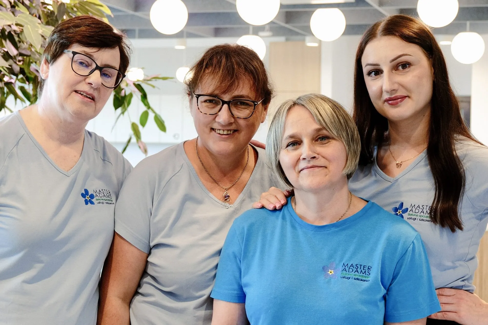
Niezapominajka w logo to nasz sposób pracy
„Nie zapomnij o mnie” - tak szepczą niezapominajki w wierszu Konopnickiej. My nie zapominamy o szczegółach, które w wielu biurach giną po kilku tygodniach współpracy. Od ponad 20 lat żaden klient nie zrezygnował z naszych usług z naszego powodu, a niektórzy, zmieniając siedzibę, zabierają nas ze sobą.
Korzyści klienta w Master AdamsPrace okresowe co tydzień
Całe wyposażenie biura myjemy od góry do dołu raz w tygodniu, a nie dwa razy w roku. Dlatego meble i sprzęt po kilkunastu latach wyglądają jak nowe.
Siedem kolorów ścierek
Mopy i ścierki z mikrowłókien są przypisane kolorem do zadań i stref, a rękawice mają trzy kolory. Deski sedesowej nie czyścimy tą samą ścierką co biurka.
Stały opiekun biura
Każde biuro ma swojego opiekuna. Przy zastępstwie przychodzi osoba pracująca tymi samymi środkami, sprzętem i procedurami.
Klawiatury, telefony, zszywacze
Czyścimy wszystkie powierzchnie i wyposażenie, także urządzenia elektroniczne, właściwymi preparatami do każdego typu ekranu.
Cieknący kran, przepalona żarówka
Nasi pracownicy monitorują stan biura. Jeśli coś przestaje działać, dowiesz się o tym pierwszy.
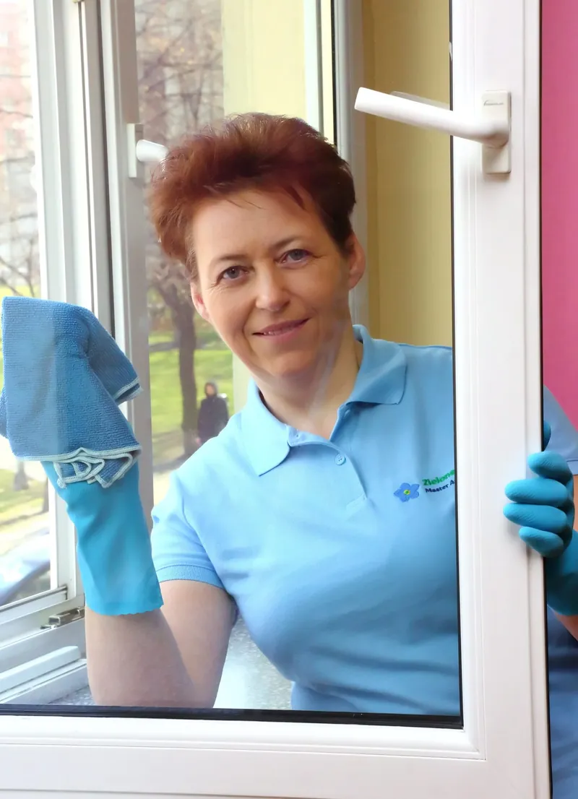
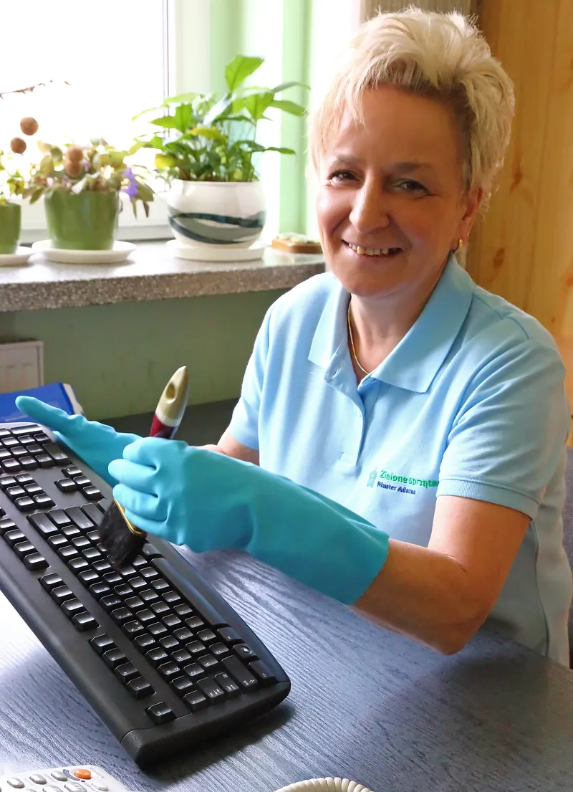
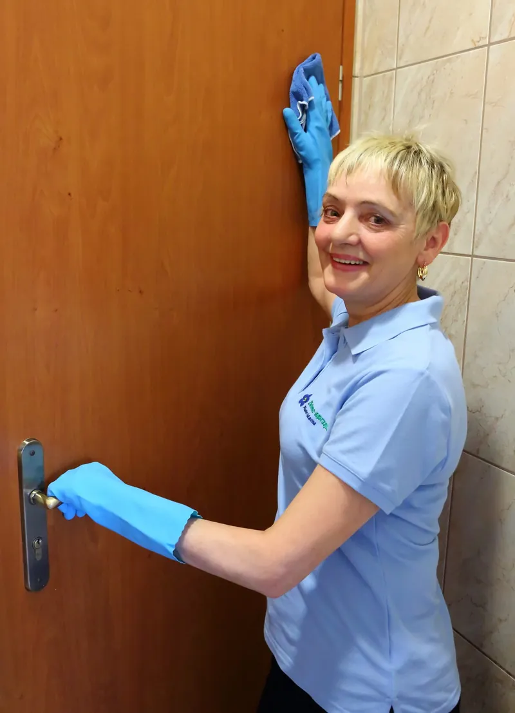
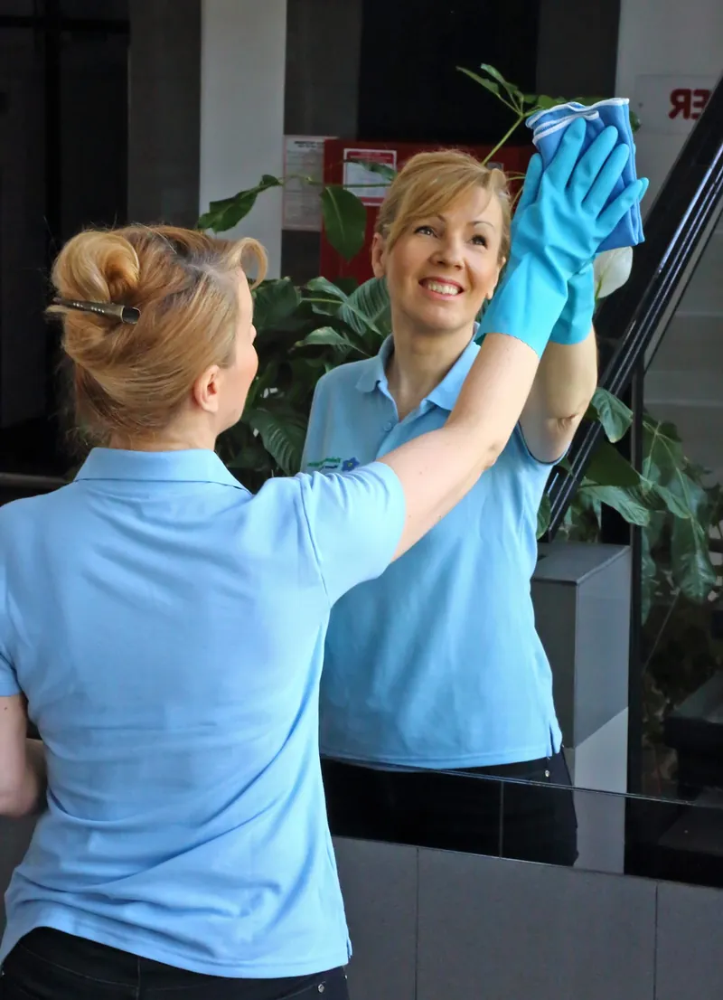
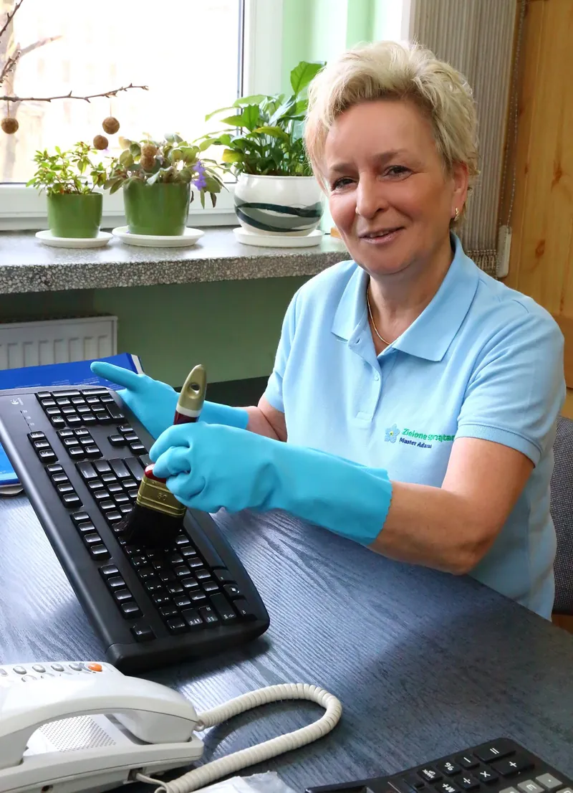
Co robimy
Sprzątamy biura i obiekty biurowe w Katowicach, a wiedzą dzielimy się na szkoleniach dla innych firm sprzątających.
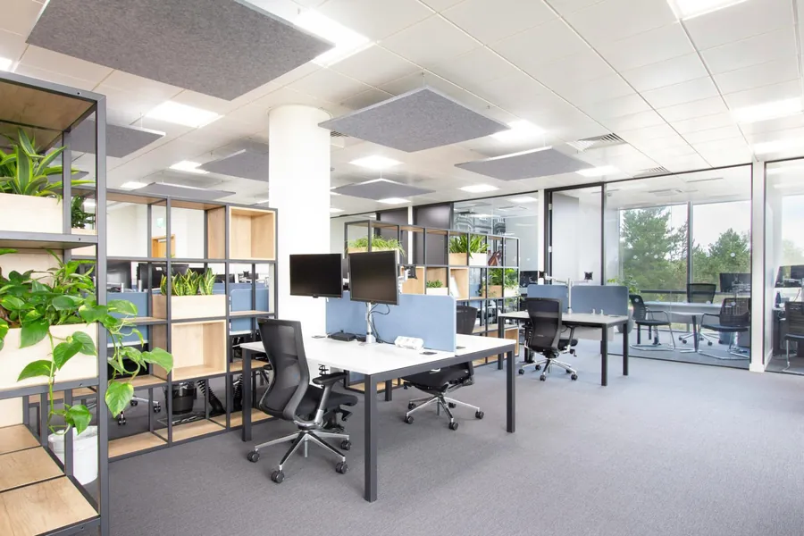
Sprzątanie biur
Regularne sprzątanie obiektów biurowych w Katowicach, gruntowne doczyszczanie na start, czyszczenie wykładzin, tapicerki i mycie okien.
Szczegóły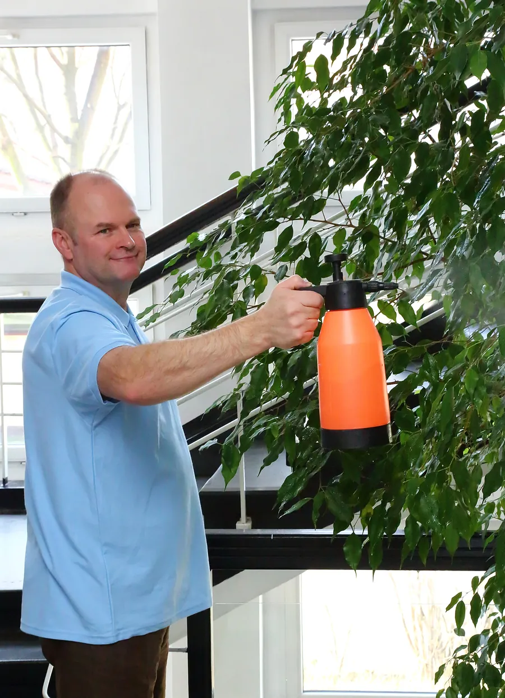
Usługi dodatkowe
Zakupy artykułów biurowych, spożywczych i sanitarnych bez marży, pielęgnacja roślin, obsługa spotkań firmowych. Dla stałych klientów.
Szczegóły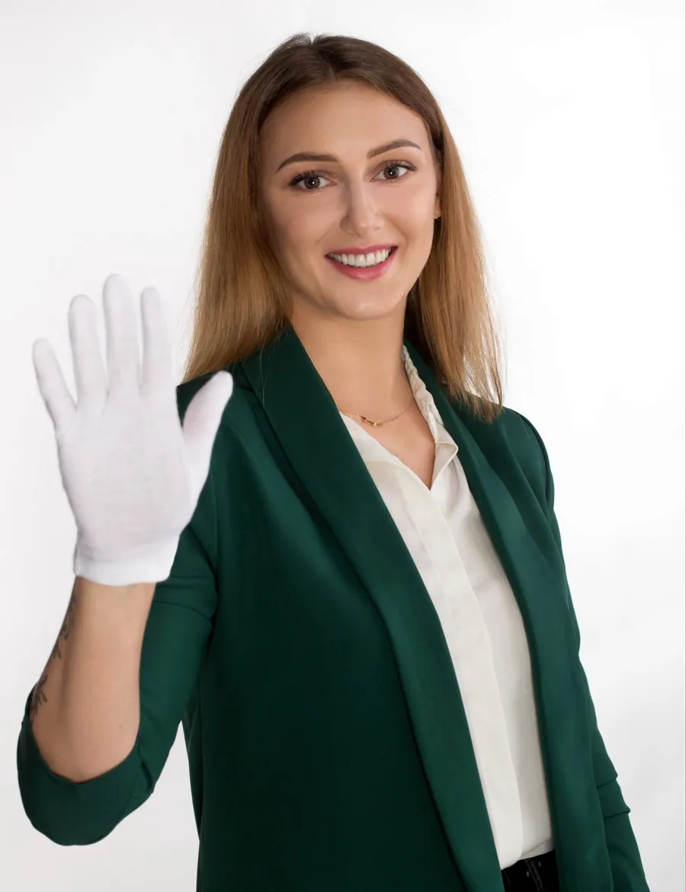
Szkolenia i kursy
Profesjonalne sprzątanie, higieniczne rozwiązania i ekologiczna firma sprzątająca. Jedno- lub dwudniowe szkolenia z certyfikatem.
Szczegółyod 60 zł netto za roboczogodzinę kompleksowego sprzątania biura, ze środkami, sprzętem i stałym zespołem
Pełny cennik„Usługa jest kompletna i zaspokaja nasze potrzeby, całkowicie pozwala zapomnieć o sprawach związanych ze sprzątaniem, dbaniem o rośliny, zaopatrzeniem w środki czystości i higieny.”Biuro Posła do Parlamentu Europejskiego Jana Olbrychta, z referencji dla Master Adams
- Biuro posła do PE prof. Jerzego Buzkaod 2004
- Biuro posła do PE Jana Olbrychtaod 2004
- Berlitz Poland, Katowiceod 2002
- Vattenfall IT Services Polandod 2015
- Grant Thornton, biuro w Katowicachod 2015
- Powiatowa Stacja Sanitarno-Epidemiologicznaod 2019
- Koleje Śląskie
- Telewizja Polsat, oddział w Katowicach
Zielone sprzątanie, odpowiedzialne wobec ludzi i środowiska
- Środki Green Care Professional firmy Werner & Mertz z certyfikatem Cradle to Cradle, bezpieczne dla ludzi i środowiska.
- Koncentraty rozcieńczane kilkaset razy, więc odpadów opakowaniowych jest wielokrotnie mniej.
- Mikrowłókna Duotex z Nordic Ecolabel służą nam kilka lat, a odkurzacze z filtrami EPA i HEPA zatrzymują pyły i alergeny.
- Sprzęt naprawiamy i konserwujemy: niektóre wózki serwisowe mają ponad 20 lat.
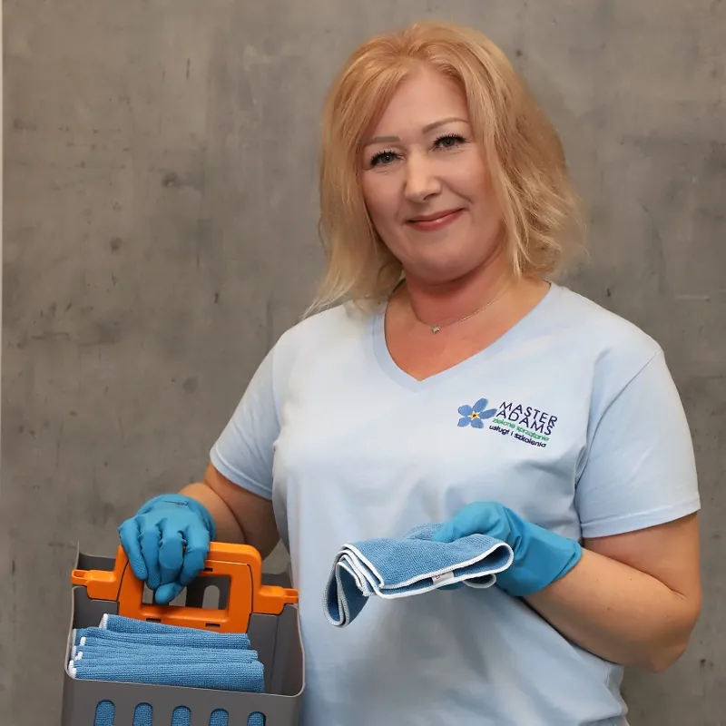
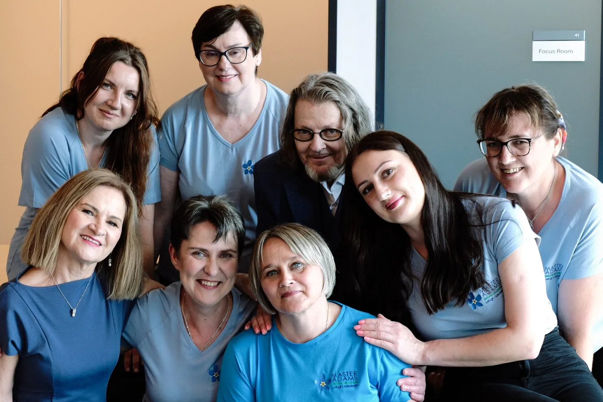
Nikt nam nie powie: co ty wiesz o sprzątaniu?
Wielu pracowników obsługuje tych samych klientów od 20 lat. Rekrutujemy po kompetencjach osobowościowych, bo profesjonalnego sprzątania potrafimy każdego nauczyć.
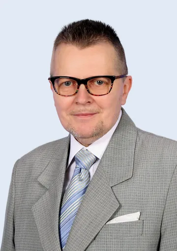
Tomasz Adamsdyrektor, w branży usług czystościowych od 1988 roku
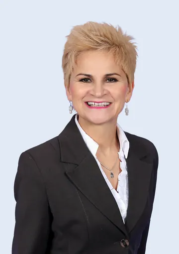
Małgorzata Adamswicedyrektor i trener sprzątania, egzaminator w Regionalnym Centrum Walidacji, Egzaminowania i Certyfikacji
Co mówią klienci i kursanci
57 opinii w GoogleLaureat Orły Czystości GOLD 2025, tytułu przyznawanego na podstawie opinii klientów
Oferuje w cenie sprzątania coś zdecydowanie więcej - troskę o zdrowie i komfort ludzi, troskę o rośliny a nawet zwierzęta (...) Po doświadczeniu z Firmą Master Adams nie wyobrażam sobie jakiejkolwiek innej Firmy, która miałaby dbać o czystość naszej firmy.
Mat JutJedna z najlepszych firm sprzątających. Korzysta tylko ze środków ekologicznych dbając o komfort klienta i środowisko. Panie które są zatrudnione dbają o każdy drobny szczegół.
Iza2504Szkolenia przeprowadzone na najwyższym poziomie. Pani Małgorzata jest bardzo życzliwą i pomocną kobietą, ma ogromną wiedzę i doświadczenie w zakresie sprzątania jak i prowadzenia firmy.
Karolina JanoszMoja firma robi pierwsze kroki w tej branży (...) Po tym szkoleniu czuję się pewnie w tym, co robię. Oprócz tego zawsze jest kontakt z Panią Małgorzatą w sprawach dotyczących prowadzenia mojej działalności.
Serhii HolovatiukSprzątamy w całych Katowicach
Koncentrujemy się na Katowicach, dzięki temu reagujemy szybko. Zapraszamy firmy z powierzchnią biurową od 200 m², a mniejsze biura obsługujemy w obiektach, które już sprzątamy.
- Centrum: Kościuszki, Grundmanna, pl. Grunwaldzki
- Koszutka
- Bogucice
- Brynów
- Ligota Euro Centrum
- Panewniki
- Dąbrówka Mała
- Strefy biznesowe przy DTŚ i A4
Czy moje biuro zawsze będzie sprzątać ta sama osoba?
Tak, każde biuro w Katowicach ma przydzielonego stałego opiekuna. W przypadku zastępstwa usługę wykonuje inny profesjonalista według tych samych procedur.
Kto zapewnia sprzęt i środki czystości?
My. Zapewniamy kompletny sprzęt, materiały i środki czyszczące, a artykuły sanitarne dostarczamy bez doliczania marży.
Czy firma posiada ubezpieczenie?
Tak, Master Adams posiada pełne ubezpieczenie OC. Na życzenie klienta zawieramy również indywidualne polisy na uzgodnioną kwotę.
Czy sprzątacie obiekty inne niż biurowe?
Tak. Nasza wiedza i doświadczenie pozwalają zadbać o higienę i wizerunek różnorodnych obiektów w Katowicach, np. szkół i przychodni.
Aktualności i wiedza
Wszystkie teksty na stronie pisze Małgorzata Adams, trener profesjonalnego sprzątania.
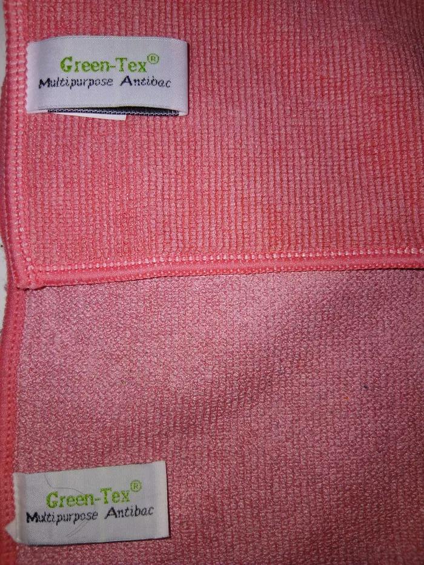
Jak ściereczki używane od 10 lat definiują nasze podejście do ekologii i higieny
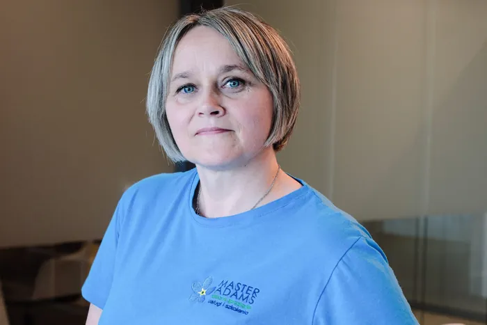
Jakość i święty spokój vs. Oszczędności - historia powrotu naszego klienta

Kapitan Jack Sparrow na straży czystości w Katowicach!
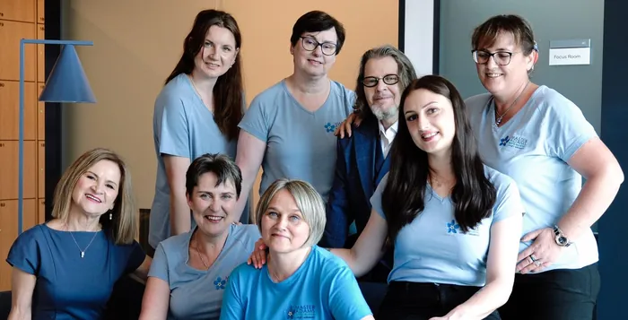
40 lat tradycji i ludzie, którzy tworzą Master Adams. Poznaj naszą dyrekcję i liderów!
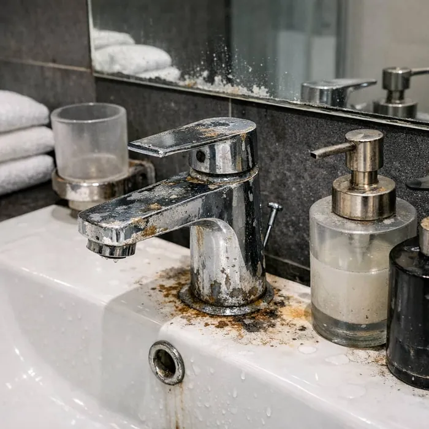
Główne błędy popełniane podczas sprzątania toalet w biurach. Jak sprzątać toalety w Katowicach?
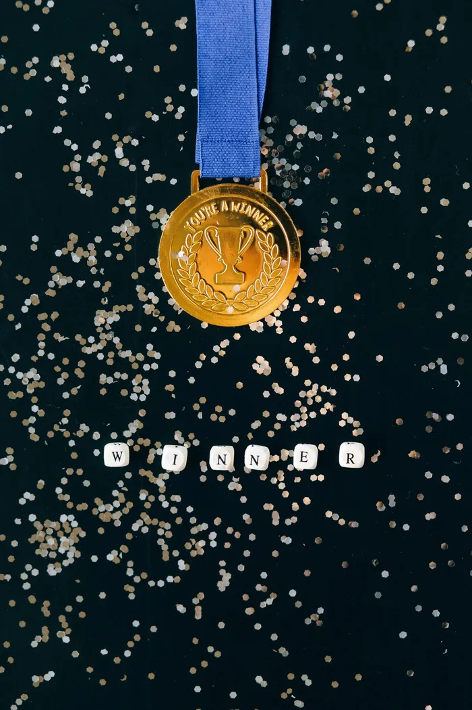
Master Adams: sprawdzona firma sprzątająca biura w Katowicach - laureat opinii klientów
Umów bezpłatną wizję lokalną
Konkretną ofertę abonamentową przygotujemy w 24 h. Zadzwoń do Małgorzaty Adams, a jeśli będzie zajęta inną rozmową, oddzwoni tak szybko, jak to możliwe.
Telefon601 530 123
w sprawach ważnych i pilnych także SMS o dowolnej porze
w sprawach ważnych i pilnych także SMS o dowolnej porze
E-mailadams@masteradams.pl
Godzinypon.-pt. 11:00-19:00, lub wcześniej, lub dłużej
Siedzibaul. Staromiejska 6/10d, 40-013 Katowice